IUPAC Nomenclature : Naming Of Alkenes and Alkynes
(You Tube Playlist Link)
- Some Basic Principles and Naming Of Alkanes
- Complex Substituents and Cycloalkanes
- Naming Of Alkenes and Alkynes
- Functional Groups with Secondary Suffix
- Naming Of Alcohols
- Naming Of Aldehydes and Ketones
- Naming of Carboxylic Acids and Acid Halides
- Naming Of Acid Amides and Esters
- Naming of Cyanides, Amines, and Ethers
- Naming of Polyfunctional Compounds (More than One Functional Group)
- Naming Of Aromatic Compounds - Benzene Rings
- Naming Of Bicyclo and Spiro Compounds
-
Rules of naming Alkenes and Alkynes
-
Rules of naming Alkenes and Alkynes
- Select longest C-C chain having maximum double or triple bond.
- Numbering should be done in a way that the double or the triple bonds get the lowest locant (position).
- Double/triple bonds have higher priority than substituents (F, Cl, Br, I, methyl, ethyl, nitro etc). This means that double/triple bonds get lower locant as compared to these sunstituents.
- Double and triple bonds are equal in priority
- If you see "a,e,i,o,u,y" one after another in a name, delete the first alphabet. Example oct-2-ene-4-yne has e and y one after another (with a 4 in the middle), so delete the 'e'. It becomes oct-2-en-4-yne
- In the rare case where there is a role tie, which means, they have the same number from either side, double gets higher priority than triple. See example 5 below.
-
Practice naming of Alkenes and Alkynes
Example 1
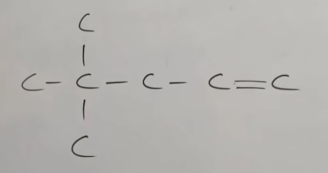
Ans: 4,4-dimethyl pent-1-eneExample 2
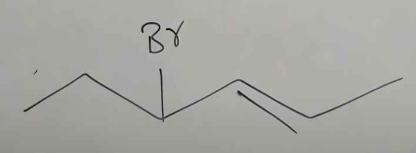
Ans: 4-bromo hex-2-eneExample 3
Ans: pent-1,3-dieneExample 4
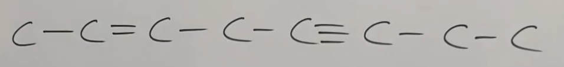
Ans: oct-2-en-5-yneExample 5
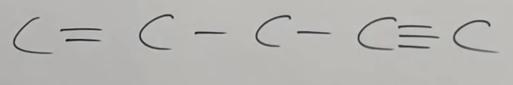
Ans: pent-1-en-4-yneExample 6
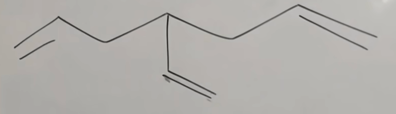
Ans: 4-ethenyl hept-1,6-dieneExample 7
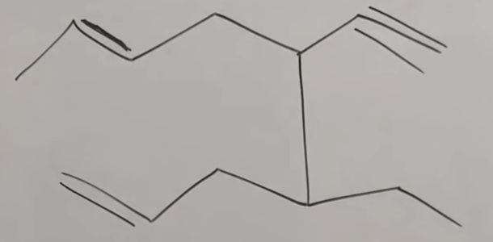
Ans: 4-ethyl-5-ethynyl non-1,7-dieneExample 8
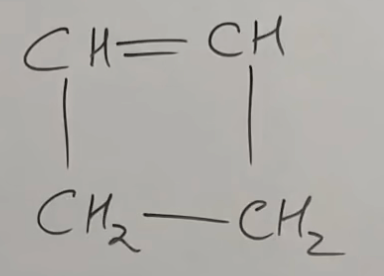
Ans: cyclobut-1-eneExample 9
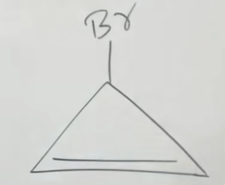
Ans: 3-bromo cycloprop-1-eneExample 10
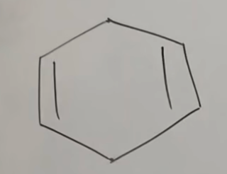
Ans: cyclohex-1,4-dieneExample 11
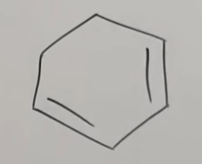
Ans: cyclohex-1,3-dieneExample 12
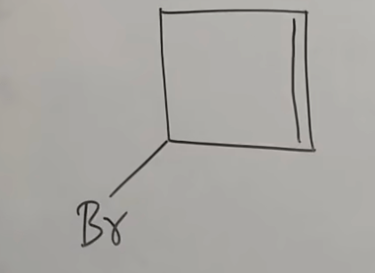
Ans: 3-bromo cyclobut-1-eneExample 13

Ans: 1,4-dichloro cyclobut-1-eneExample 14
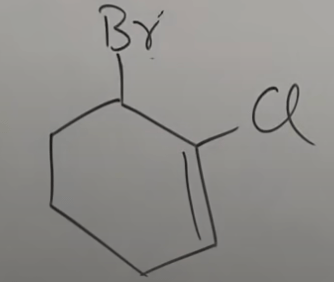
Ans: 6-bromo-1-chloro cyclohex-1-eneExample 15
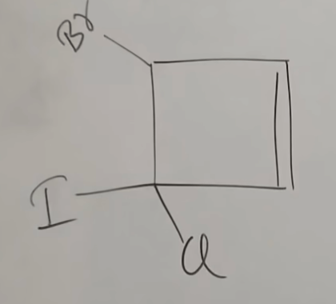
Ans: 4-bromo-3-chloro-3-iodo cyclobut-1-eneExample 16
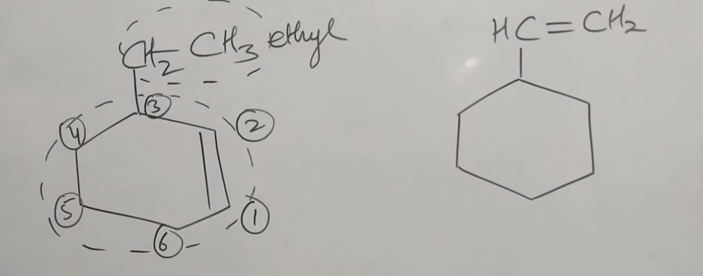
Ans: 3-ethyl cyclohex-1-ene AND 1-cyclohexenyl eth-1-eneExample 17
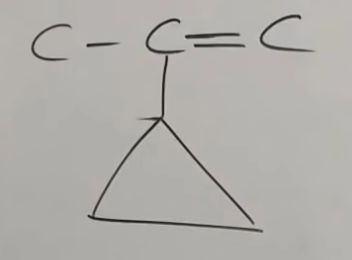
Ans: 2-cyclopropyl prop-1-eneExample 18
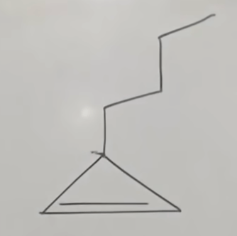
Ans: 3-butyl cycloprop-1-ene - HW Problems on naming of Alkenes/Alkynes
- Answer 1 : 5-cyclopropyl cyclopent-1,3-diene.
- Answer 2 : 3-cyclopentyl cycloprop-1-ene
- Answer 3 : 4-(cycloprop-2-enyl) cyclopent-1-ene
- Answer 4 : (imp : "Alkylidene") 2-methylidene pent-1,4-diene
- Answer 5 : (imp : "Alkylidene") 5-ethylidene non-1,8-diyne
-
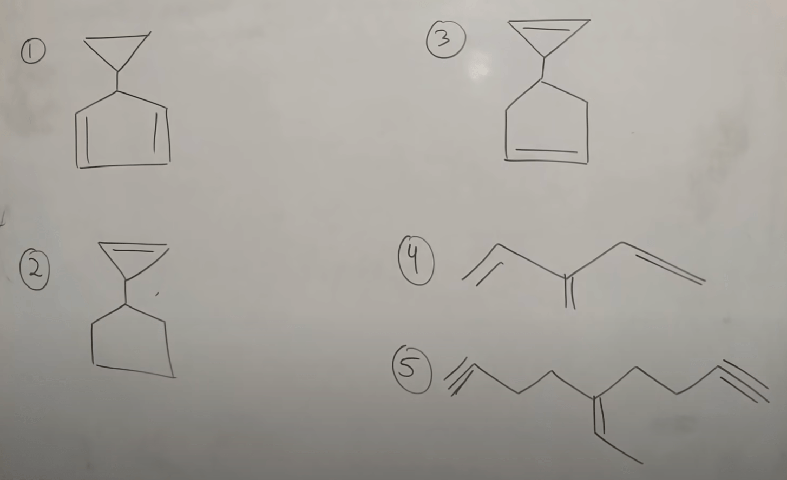